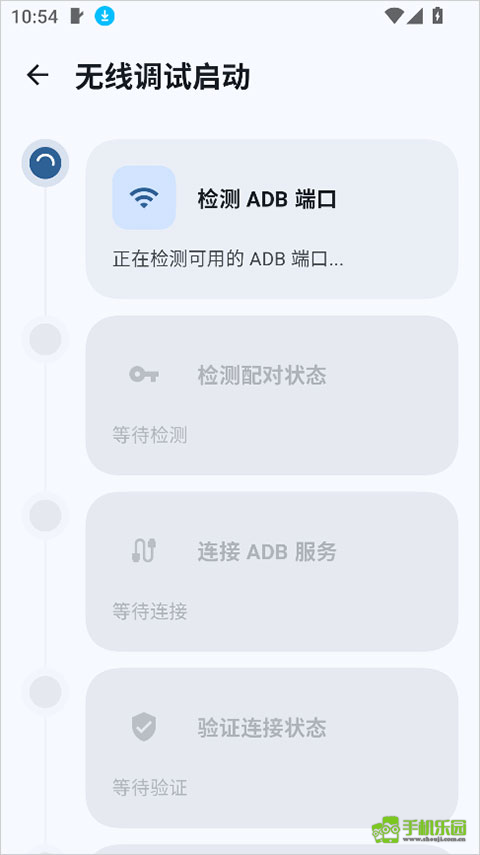

Stellar 新手入门：从装到能用，一篇走通
第一次接触 Stellar 不知道从哪下手？这篇用最白话的方式带你走完从环境检查到第一次执行特权命令的完整路径，不需要任何 Android 开发基础。
这篇能带你从完全不懂到用起来——不需要你刷过机、不需要你会敲 ADB 命令，甚至不需要你知道"无线调试"这四个字是什么意思。跟着一步步点，五分钟内你就能在自己手机上把 Stellar 跑通。
它到底是干嘛的？一个生活化类比讲明白
你手机里装的每个 App，都有自己的"权限天花板"。普通应用只能在自己的小地盘里转悠，想碰点系统级的东西——改个系统设置、清个别的应用的缓存——门都没有。
Stellar 就是一把帮你捅破天花板的钥匙——去stellar官网逛一圈能看到它的完整介绍。它在手机上拉起一个特权服务（比普通 App 权限高得多的后台进程），然后让你自己的应用或者你手动敲的命令，搭上这趟"特权直通车"。
打个比方：普通应用是小区里的住户，只能在自家屋里活动；Stellar 是物业经理，拿着万能钥匙能进所有房间。你让 Stellar 帮你开哪个门，它就开哪个——但前提是你得先把物业经理请来上班。
五分钟上手：从下载到第一次跑通
整个流程拆成四步，每步都是点几下的事。别跳过任何一步，跳了大概率启动失败。
第一步：确认你的手机能跑
Stellar 需要 Android 11 及以上系统（因为 Android 11 才引入了无线调试这个能力）。怎么看？打开手机"设置"→"关于手机"，找"Android 版本"那一行，数字 ≥ 11 就行。
如果你的系统版本比这个低，不是完全不能用——还有一条用电脑 ADB 启动的备选路，但那需要连电脑，我们这次不讲。
第二步：打开开发者选项和无线调试
这一步是最容易卡住的环节，别怕，按做就行：
- 还是在"关于手机"页面，找到"版本号"，连续点它 七次——系统会弹出提示说"您已进入开发者模式"
- 返回设置主界面，你会看到多了一个"开发者选项"（有的手机藏在"系统"或"更多设置"里）
- 进开发者选项，找到"无线调试"这一项，把它打开
就这三步，没别的。
第三步：下载并安装 Stellar
去 Stellar 的官方下载把安装包拿到，装到手机上。装完先别急着打开——先回到刚才的"无线调试"页面，点进去，你会看到一个"使用配对码配对设备"的入口，还有一组 六位配对码 和 IP 地址+端口号。
记住这两个东西，然后打开 Stellar 应用，它的首页就是启动界面。

第四步：配对并启动
在 Stellar 首页点"启动"，它会弹出配对对话框。把刚才看到的六位配对码和地址端口填进去，确认。配对成功后，Stellar 就会拉起那个特权服务——首页的状态从"服务未运行"变成绿色的"服务正在运行"，就算成了。
配对只需要做 一次。下次再启动服务，直接点按钮就行，不用再填配对码。

上手后先玩这三个功能
服务跑起来了，Stellar 的界面有四个底部标签——启动、授权应用、命令、设置。新手最值得先碰的是下面三个。
功能一：执行一条特权命令
打开"命令"标签，你会看到一张"添加命令"的卡片。点它，新建一条命令：标题随便写（比如"查看系统目录"），命令体填 ls /system，执行模式选"手动运行"，保存。
然后点刚创建的命令卡片，它会弹出一个结果窗口，里面列出了 /system 目录下的东西。这就是特权能力的实际表现——普通文件管理器根本看不了这个路径，但 Stellar 帮你做到了。
功能二：把常用命令存成"预设"
刚才那条命令只是跑了一次。如果你经常需要执行同样的操作——比如每次重启后都要清理某个缓存——可以在新建命令时把"执行模式"改成"服务启动时"。这样 Stellar 每次启动服务都会自动帮你跑一遍，不用你再手动点。
v1.0.19 之后还多了一个"随服务限量执行"的模式——你可以指定这条命令最多跑几次，超过就自动停。适合那种只需要执行一次但又不想手动点的场景。
功能三：授权其他应用使用 Stellar
回到首页，服务跑着的时候切到"授权应用"标签。这里会列出你手机里已安装的应用，点任何一个它就会被授权——之后那个应用如果集成了 Stellar 的 SDK，就能直接调用特权 API，不用每次都让你确认。
这才是 Stellar 的真正价值：你可以自己写小工具调用它，也可以用第三方已经对接好的应用——它们背后跑的都是你刚才拉起的那个特权服务。如果想了解完整的权限模型和开发者 API，去stellar文档里翻对应章节。
小白的三个常见疑问
Q1：每次启动都要配对？
不用。配对成功一次后，Stellar 会记住设备。下次启动服务直接点首页按钮就好，配对码那个入口平时不用管。
Q2：启动失败怎么办？
90% 的启动失败都是环境没备好。按开头那四项自查清单再过一遍：系统版本够不够？开发者选项开了没？无线调试开关开了没？手机连着 WiFi 吗？——这四项全对上再试，成功率一下就上去了。
如果还不行，试试升级到最新版本的 Stellar，老版本对新系统的兼容性偶尔会有缺口。
Q3：安全吗？我随便敲命令会不会把手机搞坏？
Stellar 本身是安全的——它不会自动执行任何命令，所有操作都是你主动触发的。但你要对自己敲的命令负责：跟着教程来的命令一般没风险，自己瞎试的破坏性命令（比如删系统文件）那后果自负。
一个实用建议：拿不准的命令先用手动模式验证，确认没问题再改成自动执行。
接下来去哪？
跑完这篇的流程，你已经能用 Stellar 执行命令和授权应用了。进阶方向有两条：一是去看完整的中文文档，了解终端命令的各种玩法和安全边界；二是如果你的 App 开发要集成 Stellar，去翻开发者集成章节，它提供了三个监听器帮你感知服务的连接状态、断开和授权结果，核心是 Stellar.addBinderReceivedListenerSticky 这条——Sticky 版本会在服务已经连上时立即触发一次回调，初始化场景几乎总该用它。
最后补一句：Stellar 的源码和文档同步维护在三个仓库，GitHub 主维护、Gitee 和 GitCode 做国内镜像，访问哪个快就用哪个。